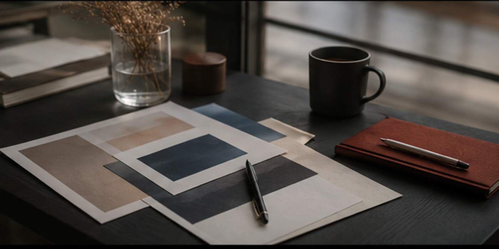
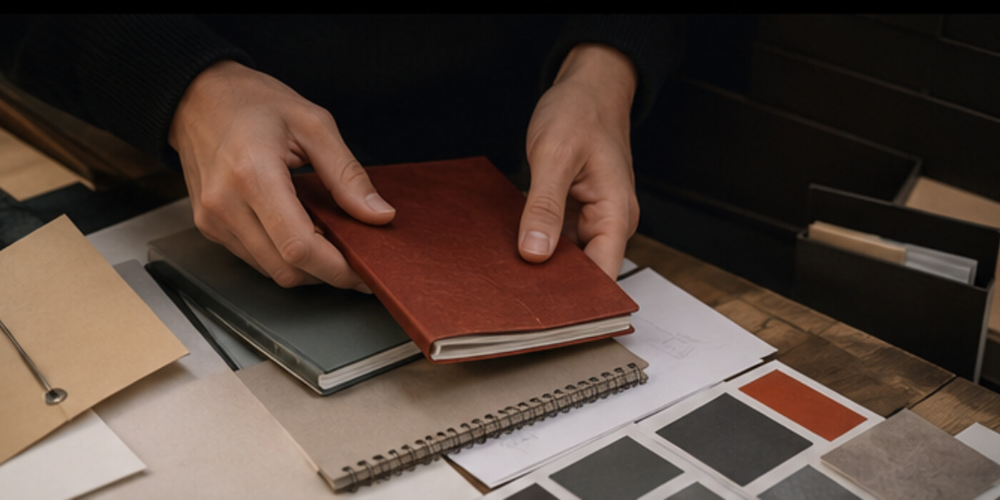

Main story
How modern web products are changing small editorial teams
A long read about new tools, clear structure and a calmer publishing process.
Editorial desk · 12 min Read story →Archive
Features, quick updates, reviews and columns in one wide editorial grid.
A long read about new tools, clear structure and a calmer publishing process.
Editorial desk · 12 min Read story →How automation removes repetitive work and leaves more time for the story.
09:40 · 4 min Read story →
A compact analysis for teams, writers and digital product makers.
11:15 · 6 min Read story →
A step-by-step list covering content, routes, imagery, themes and responsive behavior.
15:20 · 8 min Read story →Clear roles, a calm release process and one shared view of the project.
Today · 5 min Read story →Why density, scale and breathing room matter more than endless identical cards.
Column · 7 min Read story →Edition archive